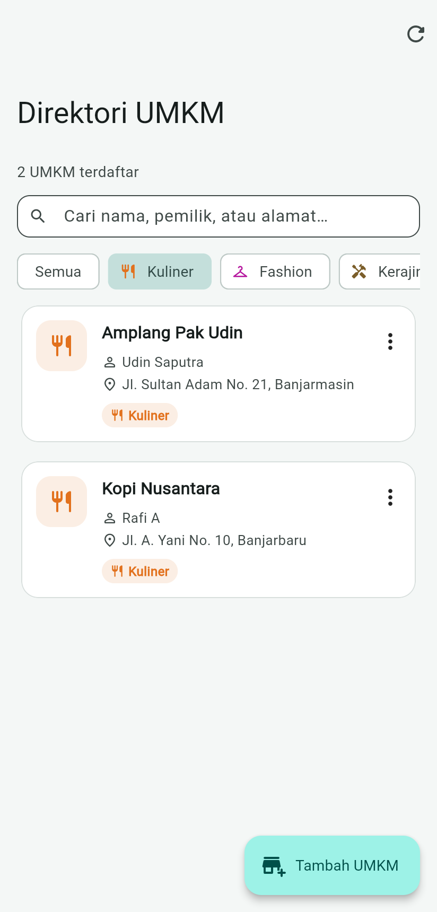
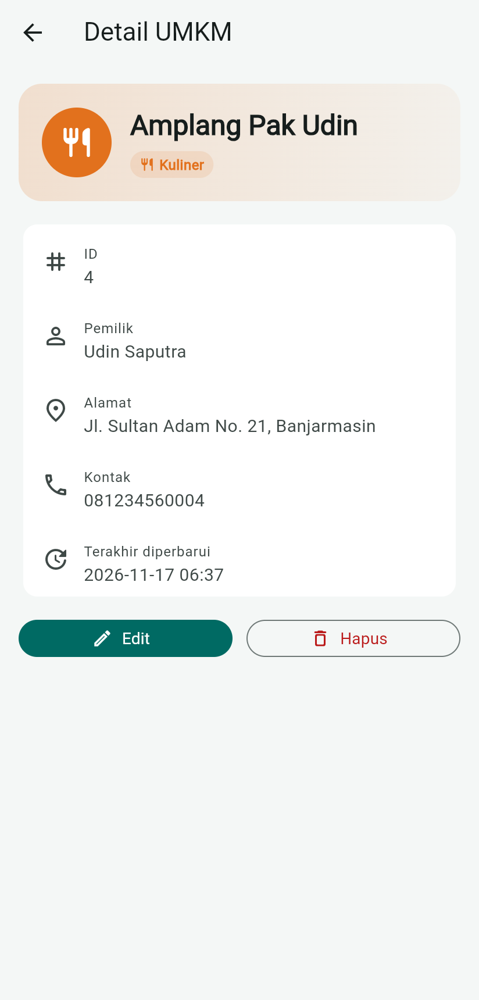
| Nama | : ______________________________ |
| NIM | : ______________________________ |
| Mata kuliah | : ______________________________ (Ilmu Komputer, Universitas Lambung Mangkurat) |
| Repository | : https://github.com/ichnasa/tugas-rest-api-umkm |
Praktik ini membangun REST API CRUD data UMKM dengan CodeIgniter 4, lalu mengonsumsinya dari aplikasi Flutter "Direktori UMKM". Kedua proyek disimpan dalam satu repository (monorepo): folder backend/ dan frontend/.
| Bagian | Isi |
|---|---|
| Backend | CodeIgniter 4.7.6, PHP 8.4. Api\UmkmController (turunan ResourceController), UmkmModel dengan aturan validasi dan pesan error berbahasa Indonesia, migration + seeder tabel umkm, filter CORS, spesifikasi OpenAPI 3 dengan Swagger UI. |
| Database | Migration CI4 sehingga bisa dipakai di MySQL/MariaDB maupun SQLite. Pengujian lokal memakai SQLite; konfigurasi MySQL tersedia di .env.example. |
| Frontend | Flutter 3 (Material 3), package http. Model class Umkm dengan fromJson/toJson, ApiResponse<T> generik untuk base response, UmkmService + ApiException. |
| Fitur tambahan | Pagination (meta) + infinite scroll, pencarian, filter kategori, pull-to-refresh, halaman detail, error validasi server ditampilkan per field, dialog konfirmasi hapus, penanganan timeout/koneksi gagal. |
| Method | Endpoint | Fungsi | Status |
|---|---|---|---|
| GET | /api/umkm?page&per_page&search&kategori | Daftar UMKM + pagination | 200 |
| GET | /api/umkm/{id} | Detail UMKM | 200 / 404 |
| POST | /api/umkm | Tambah UMKM | 201 / 400 |
| PUT | /api/umkm/{id} | Perbarui UMKM | 200 / 400 / 404 |
| DELETE | /api/umkm/{id} | Hapus UMKM | 200 / 404 |
Pengujian dilakukan terhadap server lokal (php spark serve, http://localhost:8080) memakai test console di backend/public/tester/. Halaman ini mengirim request sungguhan dengan fetch() lalu menampilkan request, body, status code, dan response JSON apa adanya. Hasil yang sama juga diverifikasi dengan curl. Swagger UI tersedia di /docs/ sebagai dokumentasi OpenAPI.
| # | Skenario | Request | Hasil |
|---|---|---|---|
| 1 | Ambil daftar UMKM (pagination) | GET /api/umkm?page=1&per_page=3 | 200, meta.total_pages = 2 |
| 2 | Ambil detail | GET /api/umkm/1 | 200 |
| 3 | Tambah data valid | POST /api/umkm | 201 Created |
| 4 | Tambah data tidak valid | POST /api/umkm | 400, errors per field |
| 5 | Perbarui data | PUT /api/umkm/6 | 200 |
| 6 | Hapus data | DELETE /api/umkm/6 | 200 |
| 7 | Ambil data yang sudah dihapus | GET /api/umkm/6 | 404 Not Found |
| 8 | Search + filter kategori | GET /api/umkm?kategori=Kuliner&search=Banjar | 200 |
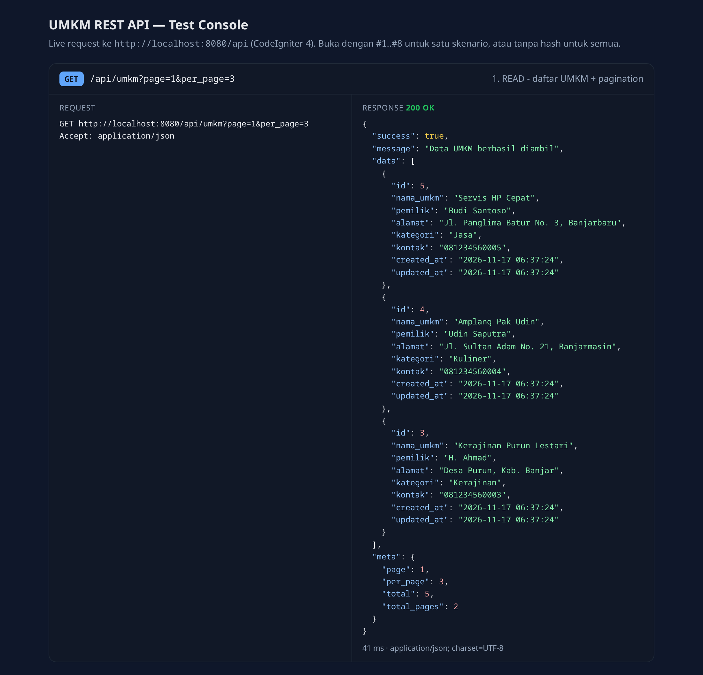
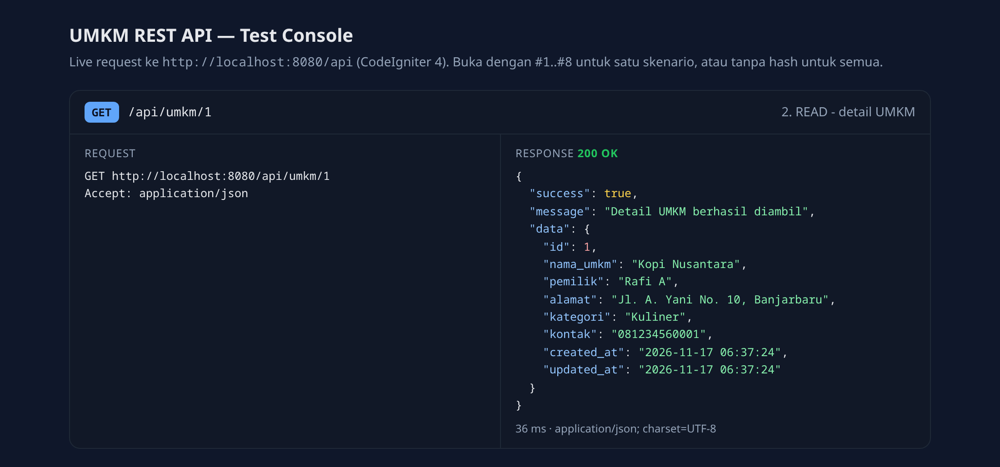
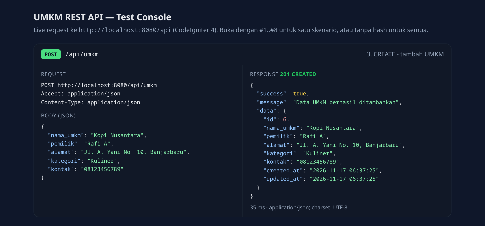
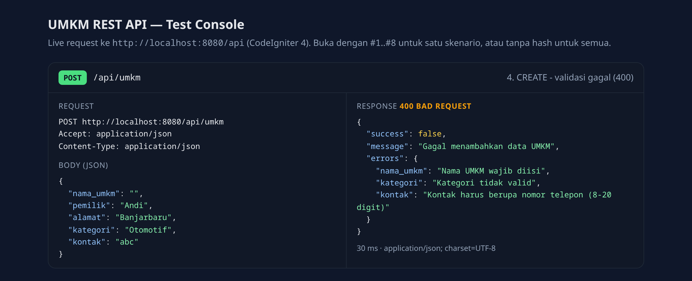
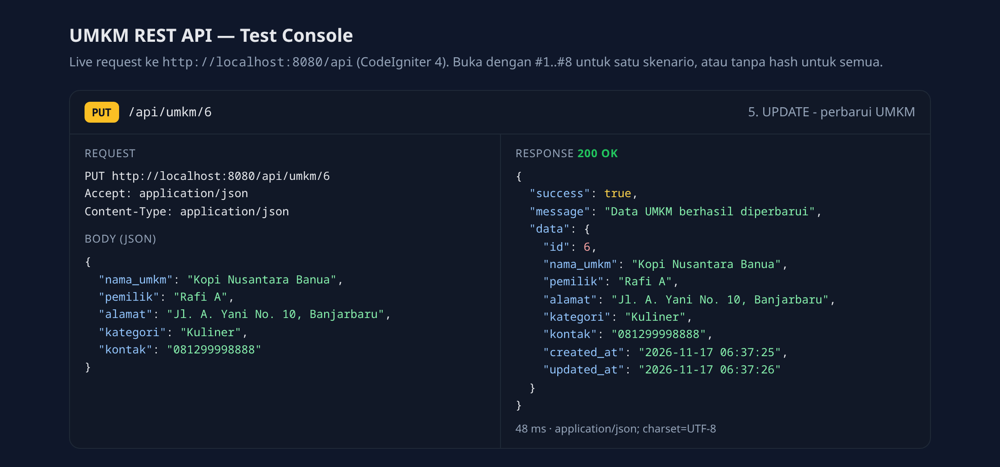
updated_at berubah.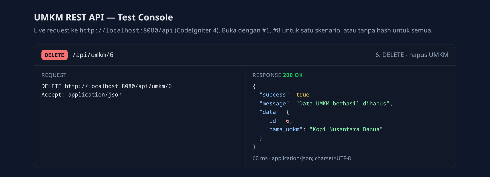
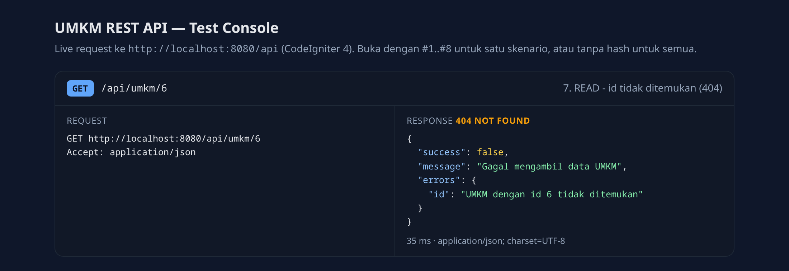
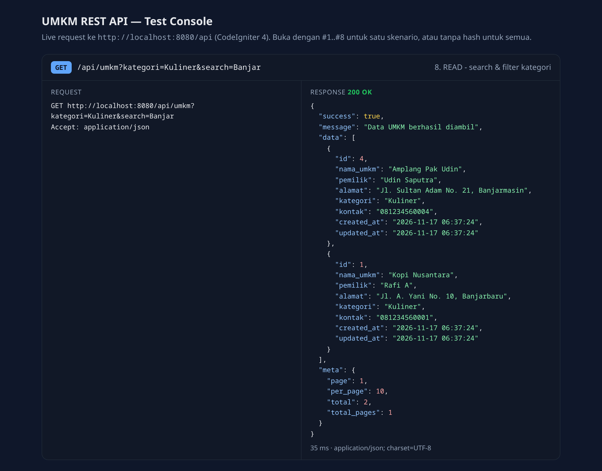
Aplikasi dijalankan sebagai Flutter Web (build release) dan mengakses API yang sama. Setiap aksi di aplikasi memanggil endpoint di atas.


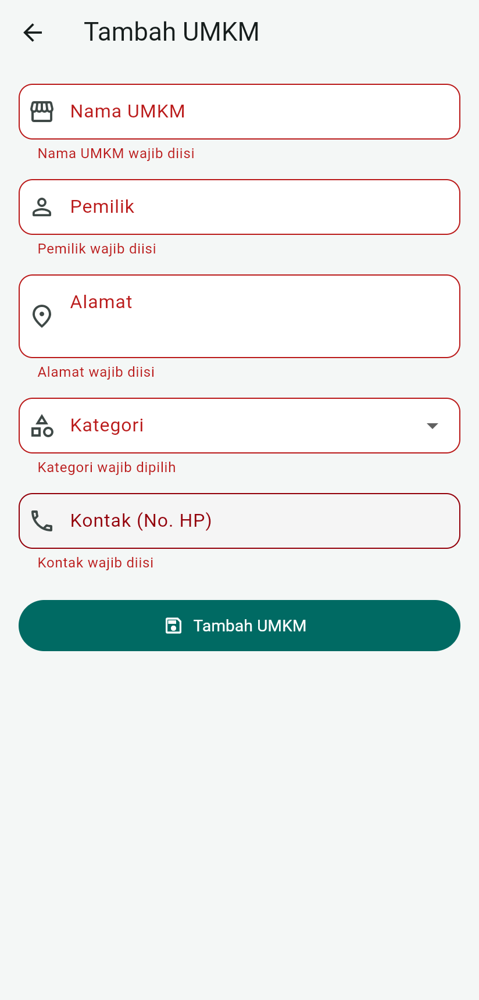
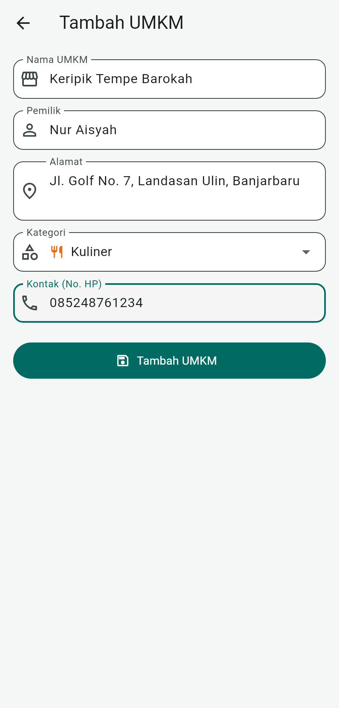
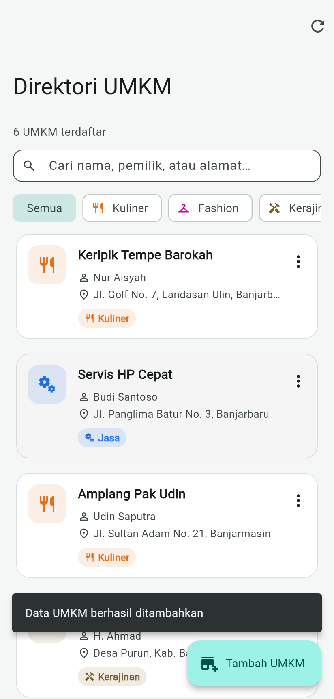
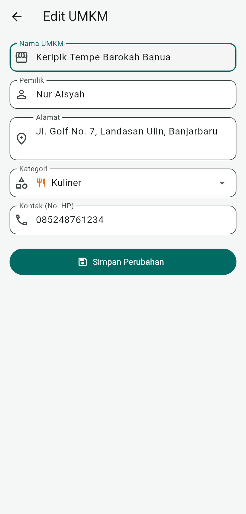
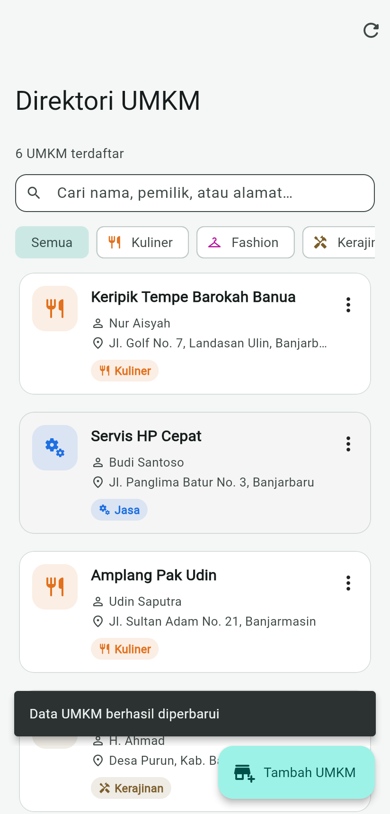
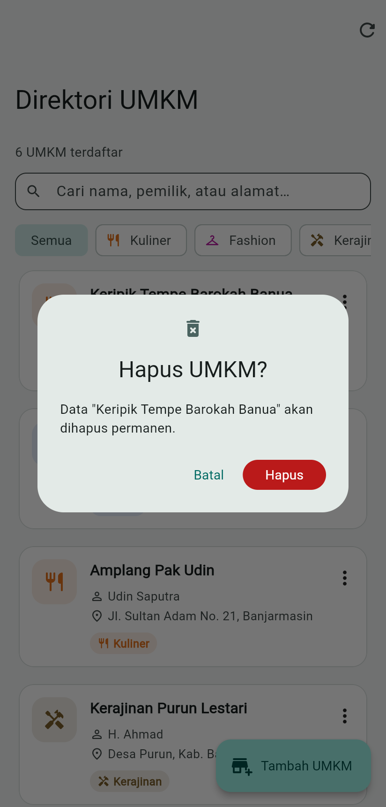
{success, message, data, meta, errors} disepakati, kedua sisi bisa dikerjakan terpisah. Status code yang tepat (201 untuk create, 400 untuk validasi, 404 untuk data tidak ada) membuat client cukup memeriksa kode dan field success, tanpa menebak dari isi pesan.$routes->resource() langsung memetakan GET/POST/PUT/DELETE ke method index/show/create/update/delete. Validasi cukup ditulis sekali di Model ($validationRules dan $validationMessages), lalu $model->errors() langsung menjadi isi errors di response. Migration dan seeder membuat database bisa dibuat ulang dengan satu perintah.map['key'] cepat untuk mencoba, tetapi rawan typo dan error tipe. Model Umkm.fromJson/toJson membuat data type-safe, dan ApiResponse<T> generik dengan fungsi parser membuat satu kelas bisa dipakai untuk response list maupun objek tunggal.Future, async/await, dan try-catch dipakai di setiap request. Saya menambahkan .timeout() dan mengubah semua kegagalan (timeout, server mati, JSON tidak valid, status 4xx/5xx) menjadi satu ApiException. Dengan begitu UI hanya perlu menangani satu jenis error.http sudah cukup. Saya menulis sendiri hal yang di Dio sudah tersedia, misalnya header default, timeout, dan pemetaan error. Jika aplikasi membutuhkan token auth, logging, atau upload file, Dio dengan interceptor akan lebih rapi.| Kendala | Penyebab & solusi |
|---|---|
| Flutter Web gagal memanggil API (CORS) | Browser mengirim request preflight OPTIONS sebelum POST/PUT/DELETE dengan JSON. Solusinya mengisi Config/Cors.php (origin, header, method), memasang filter cors di grup route api, dan menambahkan route options. Hasilnya preflight dibalas 204 dengan header Access-Control-Allow-*. |
| MySQL lokal tidak bisa diakses (root memakai password) | Karena tabel dibuat lewat migration, driver cukup diganti ke SQLite3 di .env tanpa mengubah kode. Konfigurasi MySQL tetap disertakan di .env.example. Ini menunjukkan manfaat migration dibanding membuat tabel manual. |
id kadang terkirim sebagai string | Driver database bisa mengembalikan angka sebagai string. Di backend, id di-cast ke integer sebelum dikirim. Di Flutter, fromJson tetap memakai int.tryParse(json['id'].toString()) agar aman untuk kedua kemungkinan. |
Emulator Android tidak bisa akses localhost | Di emulator, localhost menunjuk ke emulator itu sendiri. Base URL dibuat otomatis memakai 10.0.2.2 untuk Android dan bisa di-override dengan --dart-define=API_BASE_URL. Saya juga menambahkan izin INTERNET dan usesCleartextTraffic karena API masih HTTP. |
| Error validasi dari server perlu tampil di form | Isi errors pada response 400 disimpan di state form lalu dikembalikan oleh validator masing-masing field. Pesan dari server muncul tepat di bawah field yang salah, sama seperti validasi lokal. |
Authorization. Pada tahap itu migrasi ke Dio dengan interceptor menjadi masuk akal.PUT juga menerima data parsial karena validasi CI4 hanya mengecek field yang dikirim saat update. Ke depan, PATCH sebaiknya dipisah untuk update parsial dan PUT mewajibkan semua field, sesuai semantik REST di materi.CI_ENVIRONMENT harus diset ke production (header debugbar hilang), CORS dibatasi ke origin tertentu, dan API dijalankan lewat HTTPS.GitHub (public, monorepo): https://github.com/ichnasa/tugas-rest-api-umkm
backend/ — REST API CodeIgniter 4 (app/Controllers/Api/UmkmController.php, app/Models/UmkmModel.php, app/Config/Routes.php, migration & seeder)frontend/ — aplikasi Flutter (lib/models, lib/services, lib/screens)docs/ — screenshot dan sumber laporan iniCara menjalankan kedua proyek ada di README.md pada root repository.